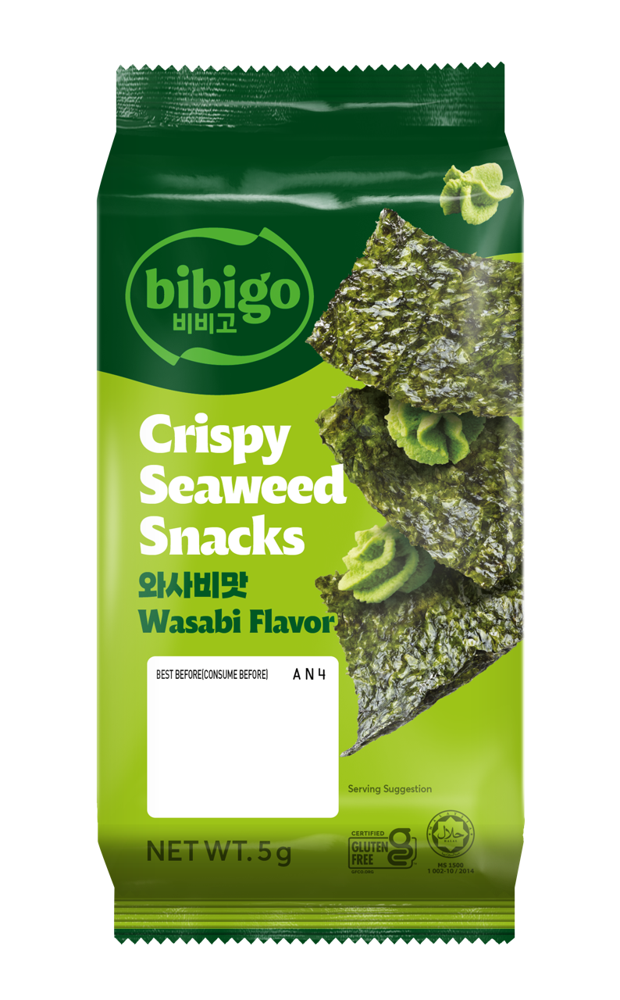
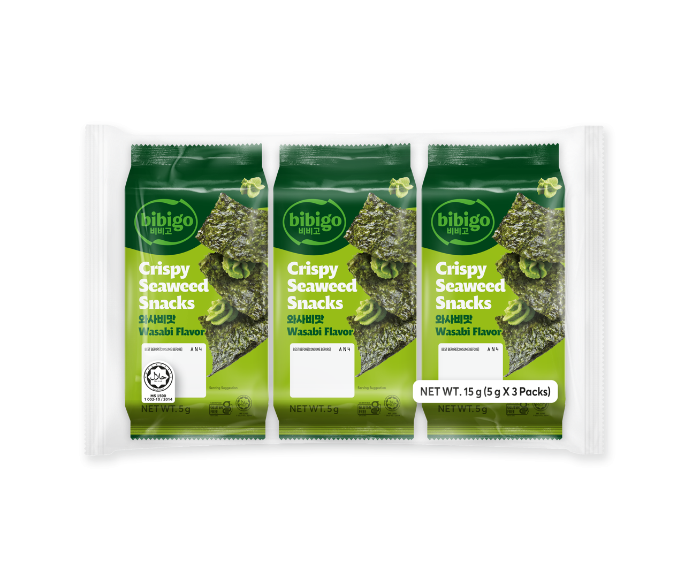
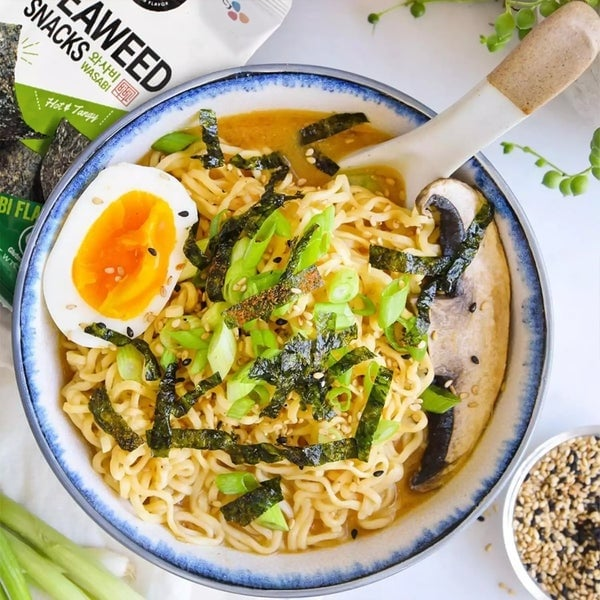

<div> <table style="border-collapse: collapse; width: 99.9809%;" border="1"><colgroup><col style="width: 49.9522%;"><col style="width: 49.9522%;"></colgroup> <tbody> <tr> <td> <div><span style="font-size: 14pt;"><strong>Bibigo <span>Gustari de alge crocante (Wasabi)</span></strong></span></div> <div><span style="font-size: 14pt;"><strong>3x5g</strong></span></div> <div><span style="font-size: 14pt;">Gustarea ta preferata, mereu la indemana. Pachetul Bibigo de 5g iti aduce echilibrul perfect intre textura crocanta a algelor premium si intensitatea revigoranta a aromei de wasabi. O optiune rapida, usoara si plina de savoare, ideala pentru pauzele dinamice din timpul zilei.</span></div> </td> <td></td> </tr> <tr> <td></td> <td><span style="font-size: 14pt;">Savoare de trei ori mai intensa. Multipack-ul convenabil cu 3 portii individuale de alge marine cu wasabi este alegerea perfecta pentru a avea mereu in camara o gustare coreeana autentica. Pastreaza-le proaspete pentru tine sau imparte bucuria aromelor asiatice cu cei dragi.</span></td> </tr> <tr> <td><span style="font-size: 14pt;">Inspira-te in bucatarie! Transforma un bol clasic de ramen intr-o experienta gastronomica veritabila. Presara deasupra fasii crocante de alge Bibigo cu wasabi pentru a adauga preparatului tau acea nota picanta si reconfortanta, specifica retetelor originale din Seul.</span></td> <td></td> </tr> </tbody> </table> </div>